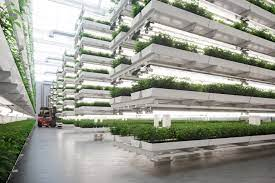
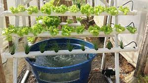

1. Agricultura de precisão: A agricultura de precisão utiliza tecnologias como GPS, sensores e imagens de satélite para monitorar e otimizar o manejo das culturas, resultando em aplicação precisa de insumos, redução de desperdícios e maior eficiência no uso de recursos.
2. Agricultura vertical: A agricultura vertical é um método de cultivo em camadas verticais, em estruturas fechadas, otimizando o espaço e permitindo produção contínua. Com controle preciso das condições, essa abordagem aumenta a produtividade por área cultivada.
3. Aquaponia: A aquaponia integra a criação de peixes com o cultivo de plantas em um sistema simbiótico. Os resíduos dos peixes alimentam as plantas, que filtram a água para os peixes. Esse sistema fechado economiza água e aumenta a produtividade de ambos.
4. Cultivo hidropônico: Na hidroponia, as plantas crescem sem solo, sendo suspensas em um meio líquido nutritivo ou em aeroponia, onde as raízes são expostas ao ar e nebulizadas com nutrientes. Esse método permite controle preciso dos nutrientes, uso eficiente da água e maior produtividade.
5. Agrofloresta: A agrofloresta combina árvores, culturas e animais, promovendo interações positivas e diversidade. Essa prática sustentável aumenta a resiliência, reduz insumos externos, conserva o solo e auxilia no sequestro de carbono.